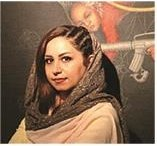
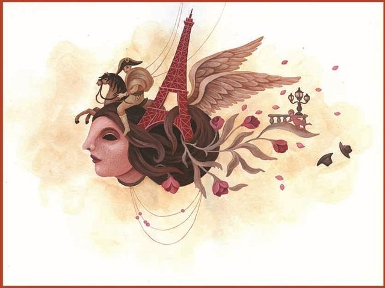
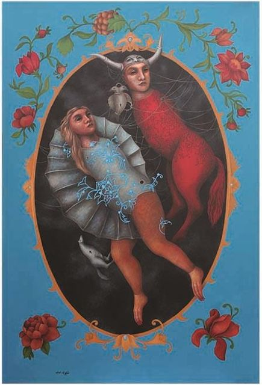
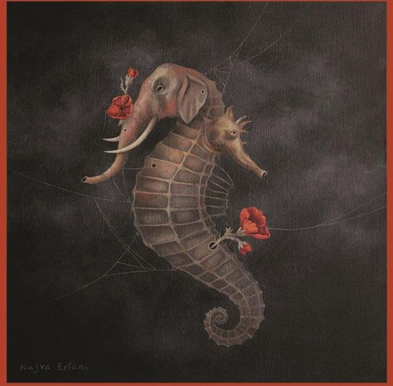
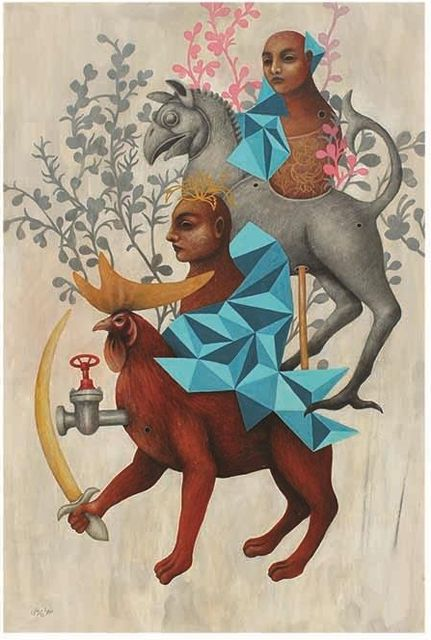
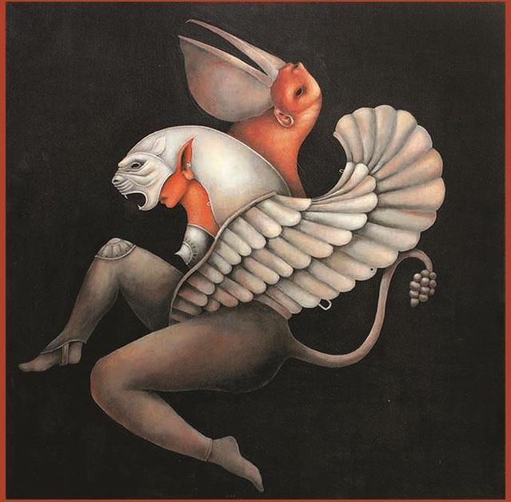
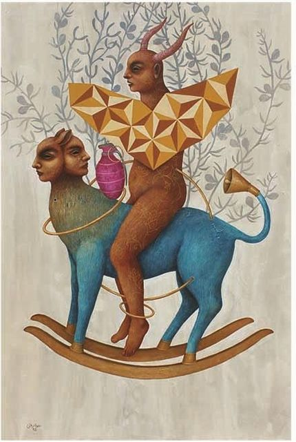
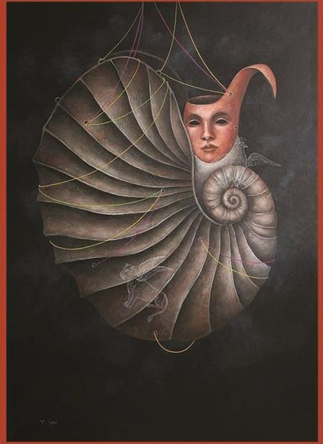
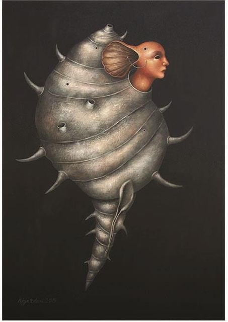
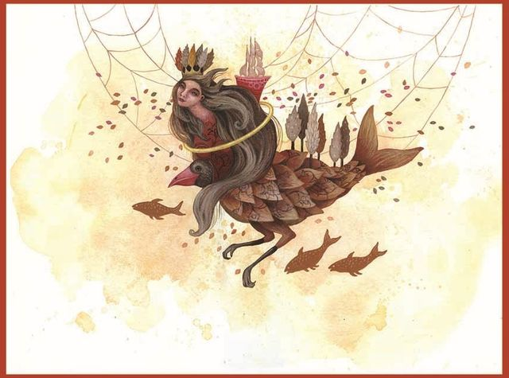

Artist
Najva Erfani

- Born1984
- FromTehran, Iran
- Works10
- Dated2015–2016
- CatalogueContemporary Iranian Art, Tehran 2017
Works10 artworks



















History of experienceBiography · education · exhibitions · awards
Education
- M.A in illustration from the Art University|Tehran – Iran
- B.A in Graphic from the Art University|Tehran – Iran
- Member of Society of Iranian Painters (SIP)
- Member of illustrators Cultural & Artistic Association
- Illustrator of more than 35 Children Books.
Street Art in Tehran
- 2016Yadegar imam Highway|Tehran – Iran
- 2016Urban Graphic|Tehran – Iran
- 20155 paintings in The Sadr Highway|Tehran – Iran
- 2015Urban Graphic|Tehran – Iran
- 2014Urban Graphic in Tehran-Urban Card Postals|Tehran – Iran
Solo exhibition
- 2016"Lion Woman", Azad Art Gallery|Tehran – Iran
- 2011Illustration Exhibition, khane karikature|Tehran – Iran
Group exhibition
- 2016"Reflexe", Dena Art Gallery|Tehran – Iran
- 2016Illustration, Shirin Art Gallery|Tehran – Iran
- 2016"NAOH", Elaheh Art Gallery|Tehran – Iran
- 2016Members of Society of Iranian Painters, Khane Honarmandan|Tehran – Iran
- 2016The 5th Expo of Several Generations of Iranian Contemporary Artists, Laleh Art Gallery|Tehran – Iran
- 2016"Persian Museum of Contemporary Arts, In the Works of Iranian Artists|Tehran – Iran
- 2015Illustration Exhibition: Shahnameh's women, Arasbaran Art Gallery|Tehran – Iran
- 2015Illustration Exhibition: New Image from Iran, Nyle billeder fra Iran|Denmark
- 2015"Nothingness", Group Painting Exhibition,Anahita Art Gallery|Tehran – Iran
- 2015Illustration Exhibition: Books, Laleh Art Gallery|Tehran – Iran
- 2015"Jahan Pahlavan", Shirin Art Gallery|Tehran – Iran
- 2015The 4th Expo of Several Generations of Iranian Contemporary Artists, Laleh Art Gallery|Tehran – Iran
- 2014"Dream", Mehrva Art gallery|Tehran – Iran
- 20142nd festival of Art for Peace, Khane Honarmandan|Tehran – Iran
- 2014Painting & sculpture Group Exhibition by past to tomorrow, Day art gallery|Tehran – Iran
- 20136nd Biennial of Tehran illustration, Saba cultural & Artistic Institute|Tehran – Iran
- 2013Biennial of illustrations Bratislava (BIB)|Slovakia
- 2013Belgrade illustration biennial.
- 2012"The Bride", Arya Art gallery|Tehran – Iran
- 2011Illustration of Sohrab Sepehri poems, shafagh gallery|Tehran – Iran
- 2011Members of illustrators Cultural & Artistic Association, khane honarmandan|Tehran – Iran
- 2010Members of illustrators Cultural & Artistic Association, Imam Ali museum|Tehran – Iran
- 2009Belgrade illustration biennial
- 2009Iranian youth, saba cultural & Artistic Institute|Tehran – Iran
- 2007Polish posters, haft samar gallery|Tehran – Iran
- 200540 years of Gabriel Garcia Marquez, khane honarmandan|Tehran – Iran
Source: the Sobhan Gallery artist catalogue “Sobhan Gallery. C. Najva Erfani.pdf”.